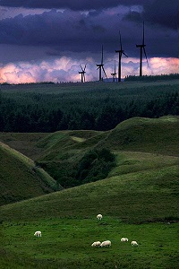

The recent increase in global temperatures isn't just a headline—it’s a reality we are feeling every summer. The intense heat waves and declining air quality in many areas are a direct reflection of a landscape losing its natural equilibrium. We often look to global leaders for solutions, but the most impactful change can start right in our own backyards and neighborhoods. The blessing of our natural environment is that it knows how to heal itself; we just need to give it a hand. Reforestation isn't just about planting trees; it's about rebuilding our natural defenses. Trees provide shade, reduce the urban heat island effect, filter our air, and absorb carbon dioxide. If you are concerned about the heat and want to take action, here is how you can mobilize your community for a powerful tree-planting initiative.
A successful planting drive requires careful planning long before the first shovel hits the dirt.
Don't just plant randomly. Define why and where. Are you trying to cool a specific neighborhood, shade a roadside walkway, or restore a local park? The Power of Partnership: Conduct a mapping day with neighbors. Identify optimal areas that need shading, focusing on public spaces where the whole community will benefit.
You cannot do this alone. To ensure success and survival of the trees, you need dedicated volunteers. Religious and Political Leaders: Involve local mosques, churches, and community leaders. Their support can unite a neighborhood quickly. Create Ownership: Don’t just ask for volunteers to plant; ask them to adopt. Assign "guardians" to specific new saplings to handle watering and protection for the critical first year.
This is crucial. You must plant trees that are indigenous and can thrive in our specific climate. For Gujranwala, this means trees that tolerate high heat and can handle fluctuating water availability. Shade and Climate Champions: Focus on species like Neem, Sukh Chain (Indian Beech), and Amaltas (Golden Shower Tree). These have been tested by time in our region. Fruit and Aesthetics: Consider Aam (Mango), Jamun, and Gul Mohar to add food resources and beauty alongside shade..
We should use more alternative fuels to electricity and keep the environment around us clean. We should keep the water resources around us like oceans and rivers clean.